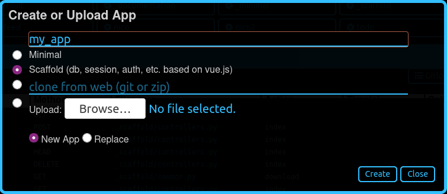

Creating an app
From scratch
Apps can be created using the dashboard or directly from the filesystem. Here, we are going to do it manually, as the Dashboard is already described in its own chapter.
Keep in mind that an app is a Python module; therefore it needs only a
folder and a __init__.py file in that folder.
Note
An empty __init__.py file is not strictly needed since Python 3.3, but it will be useful later on.
Open a command prompt and go to your main py4web folder. Enter the following simple commands in order to create a new empty myapp app:
mkdir apps/myapp
echo '' > apps/myapp/__init__.py
Tip
for Windows, you must use backslashes (i.e. \) instead of
slashes.
If you now restart py4web or press the “Reload Apps” in the Dashboard, py4web will find this module, import it, and recognize it as an app, simply because of its location. By default py4web runs in lazy watch mode (see the run command option) for automatic reloading of the apps whenever it changes, which is very useful in a development environment. In production or debugging environment, it’s better to run py4web with a command like this:
py4web run apps --watch off
A py4web app is not required to do anything. It could just be a container for static files or arbitrary code that other apps may want to import and access. Yet typically most apps are designed to expose static or dynamic web pages.
Static web pages
To expose static web pages you simply need to create a static
subfolder, and any file in there will be automatically published:
mkdir apps/myapp/static
echo 'Hello World' > apps/myapp/static/hello.txt
The newly created file will be accessible at
http://localhost:8000/myapp/static/hello.txt
Notice that static is a special path for py4web and only files under
the static folder are served.
Important: internally py4web uses the ombott (One More BOTTle) <https://github.com/valq7711/ombott>`__, It supports streaming, partial content, range requests, and if-modified-since. This is all handled automatically based on the HTTP request headers.
Dynamic Web Pages
To create a dynamic page, you must create a function that returns the
page content. For example edit the myapp/__init__.py as follows:
import datetime
from py4web import action
@action('index')
def page():
return "hello, now is %s" % datetime.datetime.now()
Reload the app, and this page will be accessible at
http://localhost:8000/myapp/index
or
http://localhost:8000/myapp
(notice that index is optional)
Unlike other frameworks, we do not import or start the webserver within
the myapp code. This is because py4web is already running, and it
may be serving multiple apps. py4web imports our code and exposes
functions decorated with @action(). Also notice that py4web prepends
/myapp (i.e. the name of the app) to the url path declared in the
action. This is because there are multiple apps, and they may define
conflicting routes. Prepending the name of the app removes the
ambiguity. But there is one exception: if you call your app
_default, or if you create a symlink from _default to myapp,
then py4web will not prepend any prefix to the routes defined inside the
app.
On return values
py4web actions should return a string or a dictionary. If they return a
dictionary you must tell py4web what to do with it. By default py4web
will serialize it into json. For example edit __init__.py again and
add at the end
@action('colors')
def colors():
return {'colors': ['red', 'blue', 'green']}
This page will be visible at
http://localhost:8000/myapp/colors
and returns a JSON object {"colors": ["red", "blue", "green"]}.
Notice we chose to name the function the same as the route. This is not
required, but it is a convention that we will often follow.
You can use any template language to turn your data into a string. PY4WEB comes with yatl, a full chapter will be dedicated later and we will provide an example shortly.
Routes
It is possible to map patterns in the URL into arguments of the function. For example:
@action('color/<name>')
def color(name):
if name in ['red', 'blue', 'green']:
return 'You picked color %s' % name
return 'Unknown color %s' % name
This page will be visible at
http://localhost:8000/myapp/color/red
The syntax of the patterns is the same as the Bottle routes. A route wildcard can be defined as
<name>or<name:filter>or<name:filter:config>
And these are possible filters (only :re has a config):
:intmatches (signed) digits and converts the value to integer.:floatsimilar to :int but for decimal numbers.:pathmatches all characters including the slash character in a non-greedy way, and may be used to match more than one path segment.:re[:exp]allows you to specify a custom regular expression in the config field. The matched value is not modified.
The pattern matching the wildcard is passed to the function under the
specified variable name.
Also, the action decorator takes an optional method argument that
can be an HTTP method or a list of methods:
@action('index', method=['GET','POST','DELETE'])
You can use multiple decorators to expose the same function under multiple routes.
The request object
From py4web you can import request
from py4web import request
@action('paint')
def paint():
if 'color' in request.query:
return 'Painting in %s' % request.query.get('color')
return 'You did not specify a color'
This action can be accessed at:
http://localhost:8000/myapp/paint?color=red
Notice that the request object is equivalent to a Bottle request object. with one additional attribute:
request.app_name
Which you can use the code to identify the name and the folder used for the app.
Templates
In order to use a yatl template you must declare it. For example create a file apps/myapp/templates/paint.html that contains:
<html>
<head>
<style>
body {background:[[=color]]}
</style>
</head>
<body>
<h1>Color [[=color]]</h1>
</body>
</html>
then modify the paint action to use the template and default to green.
@action('paint')
@action.uses('paint.html')
def paint():
return dict(color = request.query.get('color', 'green'))
The page will now display the color name on a background of the corresponding color.
The key ingredient here is the decorator @action.uses(...). The
arguments of action.uses are called fixtures. You can specify
multiple fixtures in one decorator or you can have multiple decorators.
Fixtures are objects that modify the behavior of the action, that may
need to be initialized per request, that may filter input and output of
the action, and that may depend on each-other (they are similar in scope
to Bottle plugins but they are declared per-action, and they have a
dependency tree which will be explained later).
The simplest type of fixture is a template. You specify it by simply
giving the name of the file to be used as template. That file must
follow the yatl syntax and must be located in the templates folder
of the app. The object returned by the action will be processed by the
template and turned into a string.
You can easily define fixtures for other template languages. This is described later.
Some built-in fixtures are:
the DAL object (which tells py4web to obtain a database connection from the pool at every request, and commit on success or rollback on failure)
the Session object (which tells py4web to parse the cookie and retrieve a session at every request, and to save it if changed)
the Translator object (which tells py4web to process the accept-language header and determine optimal internationalization/pluralization rules)
the Auth object (which tells py4web that the app needs access to the user info)
They may depend on each other. For example, the Session may need the DAL (database connection), and Auth may need both. Dependencies are handled automatically.
The _scaffold app
Most of the times, you do not want to start writing code from scratch.
You also want to follow some sane conventions outlined here, like not
putting all your code into __init__.py. PY4WEB provides a
Scaffolding (_scaffold) app, where files are organized properly and many
useful objects are pre-defined. Also, it shows you how to manage users and
their registration.
Just like a real scaffolding in a building construction site, scaffolding
could give you some kind of a fast and simplified structure for your project,
on which you can rely to build your real project.
You will normally find the scaffold app under apps, but you can easily create a new clone of it manually or using the Dashboard.
Here is the tree structure of the _scaffold app:
The scaffold app contains an example of a more complex action:
from py4web import action, request, response, abort, redirect, URL
from yatl.helpers import A
from . common import db, session, T, cache, auth
@action('welcome', method='GET')
@action.uses('generic.html', session, db, T, auth.user)
def index():
user = auth.get_user()
message = T('Hello {first_name}'.format(**user))
return dict(message=message, user=user)
Notice the following:
request,response,abortare defined byombottwhich is a minimal and fast bottlepy spin-off.redirectandURLare similar to their web2py counterpartshelpers (
A,DIV,SPAN,IMG, etc) must be imported fromyatl.helpers. They work pretty much as in web2pydb,session,T,cache,authare Fixtures. They must be defined incommon.py.@action.uses(auth.user)indicates that this action expects a valid logged-in user retrievable byauth.get_user(). If that is not the case, this action redirects to the login page (defined also incommon.pyand using the Vue.js auth.html component).
When you start from scaffold, you may want to edit settings.py,
templates, models.py and controllers.py but probably you
don’t need to change anything in common.py.
In your html, you can use any JS library that you want because py4web is
agnostic to your choice of JS and CSS, but with some exceptions. The
auth.html which handles registration/login/etc. uses a vue.js
component. Hence if you want to use that, you should not remove it.
Copying the _scaffold app
The scaffold app is really useful, and you will surely use it a lot as a starting point for testing and even developing full features new apps.
It’s better not to work directly on it: always create new apps copying it. You can do it in two ways:
using the command line: copy the whole apps/_scaffold folder to another one (apps/my_app for example). Then reload py4web and it will be automatically loaded.
using the Dashboard: select the button
Create/Upload Appunder the “Installed Applications” upper section. Just give the new app a name and check that “Scaffold” is selected as the source. Finally press theCreatebutton and the dashboard will be automatically reloaded, along with the new app.
Watch for files change
As described in the run command option, Py4web facilitates a
development server’s setup by automatically reloads an app when its
Python source files change (by default).
But in fact any other files inside an app can be watched by setting a
handler function using the @app_watch_handler decorator.
Two examples of this usage are reported now. Do not worry if you don’t
fully understand them: the key point here is that even non-python code
could be reloaded automatically if you explicit it with the
@app_watch_handler decorator.
Watch SASS files and compile them when edited:
from py4web.core import app_watch_handler
import sass # https://github.com/sass/libsass-python
@app_watch_handler(
["static_dev/sass/all.sass",
"static_dev/sass/main.sass",
"static_dev/sass/overrides.sass"])
def sass_compile(changed_files):
print(changed_files) # for info, files that changed, from a list of watched files above
## ...
compiled_css = sass.compile(filename=filep, include_paths=includes, output_style="compressed")
dest = os.path.join(app, "static/css/all.css")
with open(dest, "w") as file:
file.write(compiled)
Validate javascript syntax when edited:
import esprima # Python implementation of Esprima from Node.js
@app_watch_handler(
["static/js/index.js",
"static/js/utils.js",
"static/js/dbadmin.js"])
def validate_js(changed_files):
for cf in changed_files:
print("JS syntax validation: ", cf)
with open(os.path.abspath(cf)) as code:
esprima.parseModule(code.read())
Filepaths passed to @app_watch_handler decorator must be
relative to an app. Python files (i.e. “*.py”) in a list passed to the
decorator are ignored since they are watched by default. Handler
function’s parameter is a list of filepaths that were changed. All
exceptions inside handlers are printed in terminal.
Domain-mapped apps
In production environments it is often required to have several apps being served by a single py4web server, where different apps are mapped to different domains.
py4web can easily handle running multiple apps, but there is no build-in mechanism for mapping domains to specific applications. Such mapping needs to be done externally to py4web – for instance using a web reverse-proxy, such as nginx.
While nginx or other reverse-proxies are also useful in production environments for handling SSL termination, caching and other uses, we cover only the mapping of domains to py4web applications here.
An example nginx configuration for an application myapp mapped to
a domain myapp.example.com might look like that:
server {
listen 80;
server_name myapp.example.com;
proxy_http_version 1.1;
proxy_set_header Host $host;
proxy_set_header X-PY4WEB-APPNAME /myapp;
location / {
proxy_pass http://127.0.0.1:8000/myapp$request_uri;
}
}
This is an example server block of nginx configuraiton. One would have to create a separate such block for each app/each domain being served by py4web server. Note some important aspects:
server_namedefines the domain mapped to the appmyapp,proxy_http_version 1.1;directive is optional, but highly recommended (otherwise nginx uses HTTP 1.0 to talk to the backend-server – here py4web – and it creates all kinds of issues with buffering and otherwise),proxy_set_header Host $host;directive ensures that the correctHostis passed to py4web – heremyapp.example.comproxy_set_header X-PY4WEB-APPNAME /myapp;directive ensures that py4web (and ombott) knows which app to serve and also that this application is domain-mapped – pay specific attention to the slash (/) in front of themyappname – it is required to ensure correct parsing of URLs on ombott level,finally
proxy_pass http://127.0.0.1:8000/myapp$request_uri;ensures that the request is passed in its entirity ($request_uri) to py4web server (here:127.0.0.1:8000) and the correct app (/myapp).
Such configuration ensures that all URL manipulation inside ombott and py4web - especially in modules such as Auth, Form, and Grid are done correctly using the domain to which the app is mapped to.